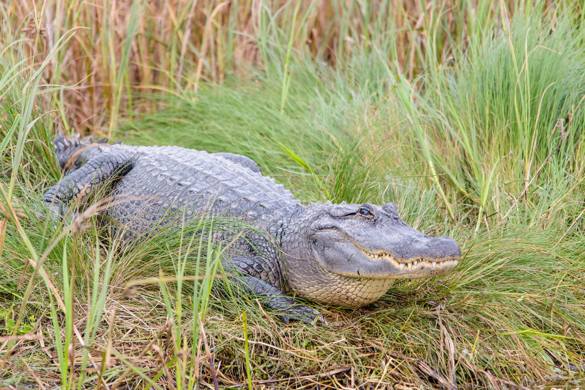
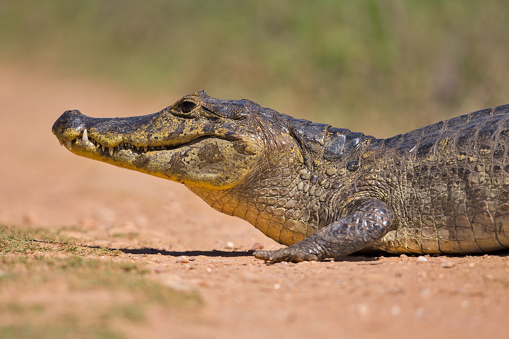
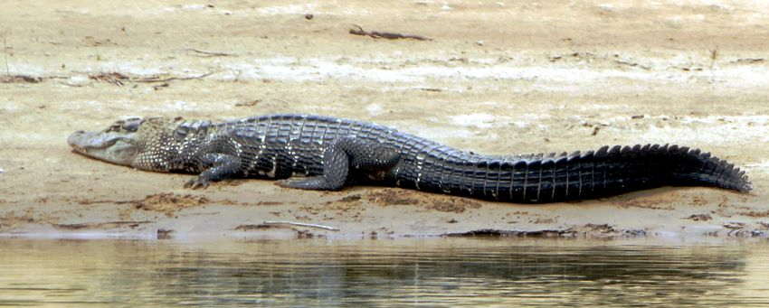
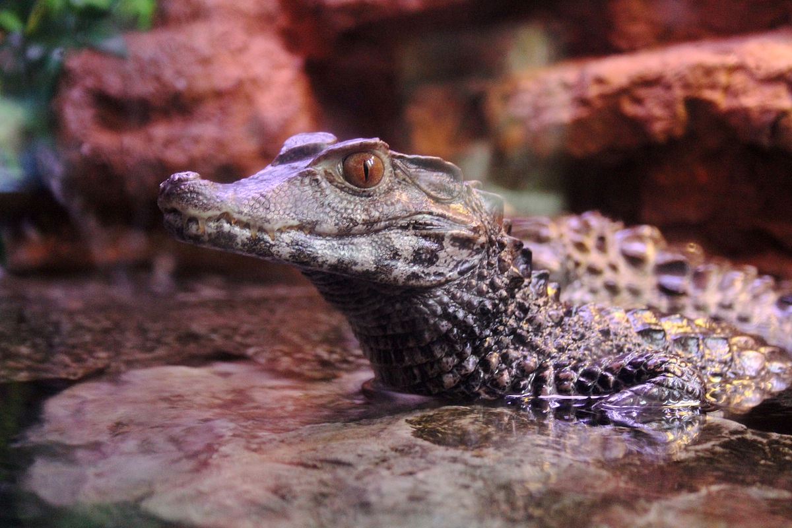

|
Alligator

Possui duas espécies, o Jacaré-americano (Alligator mississippiensis) e o Jacaré-da-china (Alligator sinensis). |
Caiman

Inclui as espécies Jacaré-de-óculos (Caiman crocodilus), Jacaré-de-papo-amarelo (Caiman latirostris) e Jacaré-do-pantanal (Caiman yacare).O Jacaré-de-papo-amarelo é um dos jacarés mais comuns no Brasil. Possui em torno de 3 metros de comprimento e o ventre é amarelo. É encontrado do Rio Grande do Sul ao Rio Grande do Norte. Ocorre também na bacia do rio Paraná, chegando até o Pantanal. Alimenta-se de peixes, caranguejos, caramujos e insetos. O Jacaré-do-pantanal habita lagoas, rios e brejos principalmente do Pantanal. Alimenta-se de peixes e insetos. |
Melanosuchus

Possui apenas a espécie Jacaré-açu (Melanosuchus niger). Pode medir 6m de comprimento. Espécie exclusiva da América do Sul, sendo encontrado em toda a bacia amazônica, incluindo Bolívia, Brasil, Colômbia, Equador, Peru e algumas áreas da Guiana e Guiana Francesa. Alimentam-se de diversos animais, como tartarugas, peixes, capivaras e veados. |
Paleosuchus

Inclui as espécies Jacaré-anão (Paleosuchus palpebrosus) e Jacaré-coroa (Paleosuchus trigonatus). O Jacaré-anão é considerado um dos menores crocodilianos do mundo, com tamanho máximo de 150 cm de comprimento. Tem distribuição em dez países da América do Sul, e no Brasil pode ser encontrado nos biomas Amazônia, Caatinga, Cerrado, Mata Atlântica e no entorno do Pantanal. O Jacaré-coroa habita a Amazônia e mede cerca 1,5m de comprimento. |